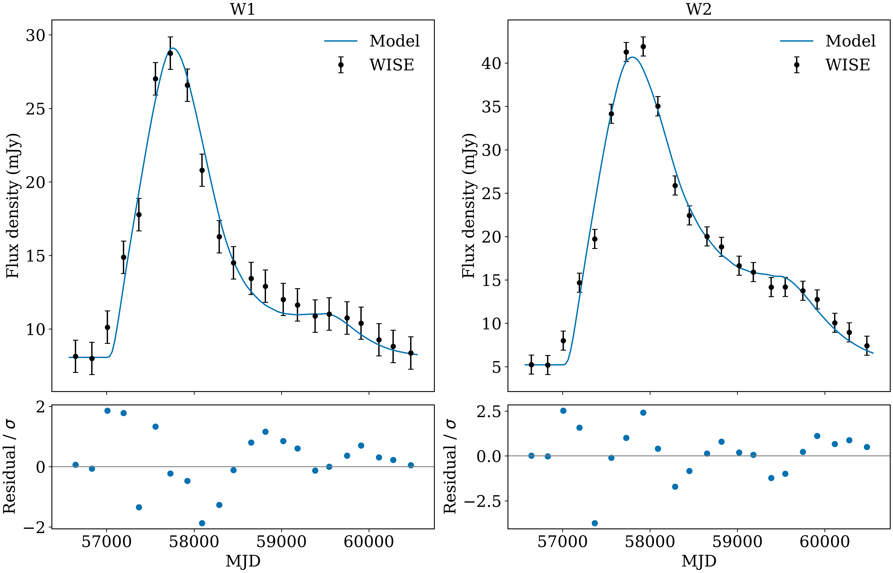

The archived UGC 11487 example
Case A is the locally refined reference solution. “Local” describes the search branch, not a different physical model. Case B is the alternative selected from the broad grid and then locally refined. Both branches use the same physical solver.
| Quantity | Case A |
|---|---|
| Total χ² | 58.95064072 |
| Nominal conditional ν | 37 |
| W1 / W2 χ² | 19.48798425 / 39.46265648 |
| t₀ (MJD) | 57063.03166039 |
| Maximum individual-grain temperature | 1143.5831 K |
| Sublimation threshold | 1793.2967 K |
| Source energy, simulated window | 8.63630287 × 10⁵¹ erg |
| Source energy, full driver | 8.66126663 × 10⁵¹ erg |
| Directly absorbed energy | 5.30131595 × 10⁵¹ erg |
| Eventually escaping IR energy | 5.30131040 × 10⁵¹ erg |
| Relative global energy residual | −1.0864 × 10⁻⁶ |

Interpretation
The observed two-band evolution admits a structured dust response with temperatures varying across radius, time, and grain size. A good fit does not uniquely identify a stellar encounter, radial density law, or grain composition. Geometry and dust prescription were held fixed in the local refinement.
The absorbed fraction of windowed source energy is approximately 0.614. It is not identical to a geometric covering factor. The energy ledger includes secondary absorption and re-emission.
Historical Case B has χ² = 59.75434, about 0.804 above Case A. Its full output is not packaged as a second validated example here. No strong model preference should be inferred solely from this small difference.
Available products
examples/case_a contains the archived summary, exact physical configuration, observational predictions, response grid, thermal arrays, grain sizes, and energy ledger. The original provenance describes the author's environment. New runs produce new provenance because paths and runtime versions can differ.